RESEARCH
Understanding the Problem
Outling the Goals
To best fit the needs of Chevron, I determined key goals to lead our research and design process. I used these goals to refine our direction of the project.
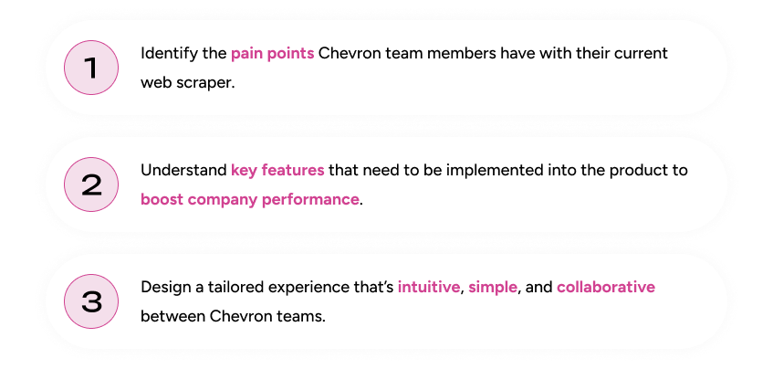
Comparing Market Competitors
I conducted a competitive analysis on Chevron’s current web scraper and two other web extension scrapers. I used the S.W.O.T method and also took a closer look specifically at how each program handled task creation, task status, results presentation, and history along with recording general pain points throughout the process.
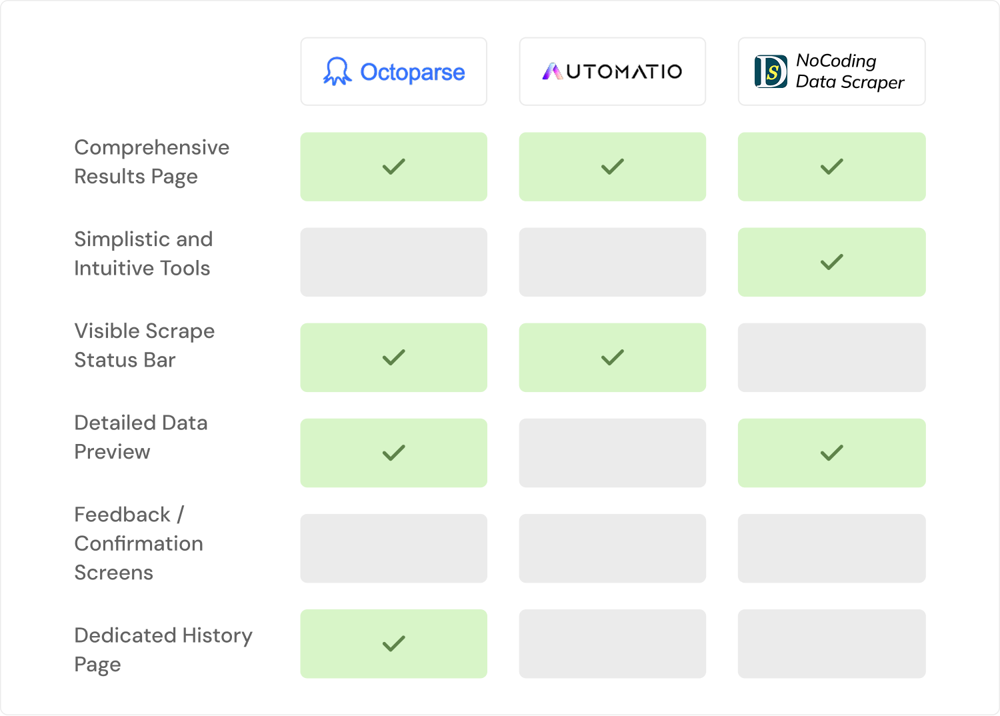
Connecting with the Users
My team and I conducted two user interviews to better understand the issues with the current scraper and how we could use those pain points to inform our design. We contacted one user who would directly be using the scraper and one user who would be viewing the data presented from the scraper.
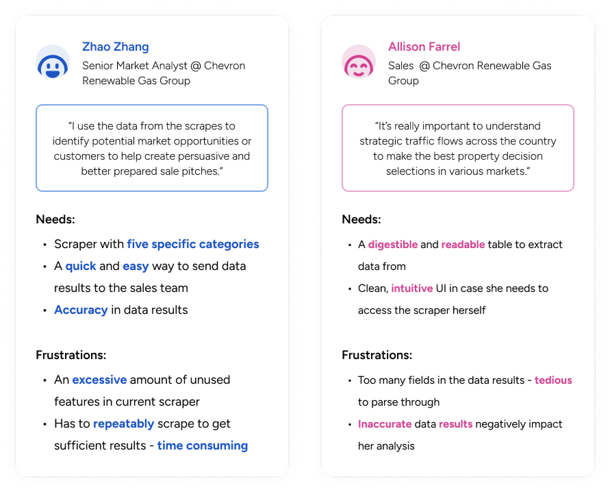
Organizing Our Findings
An affinity map was made to define the needs and behaviors of our users and outline the potential solutions to crafting a web data scraper.
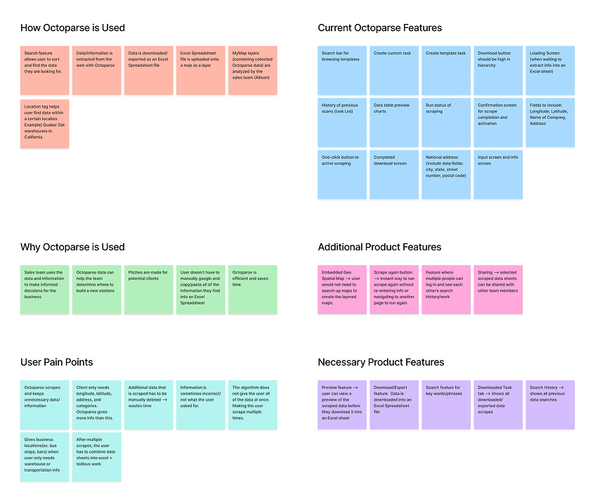
DEFINE
Determining the Scope
To finalize all of our research methods, I determined the three key goals to help guide our design process. Accuracy, Collaboration, and Simplicity were some of the most requested and discussed topics throughout our research, indicating our priorities.
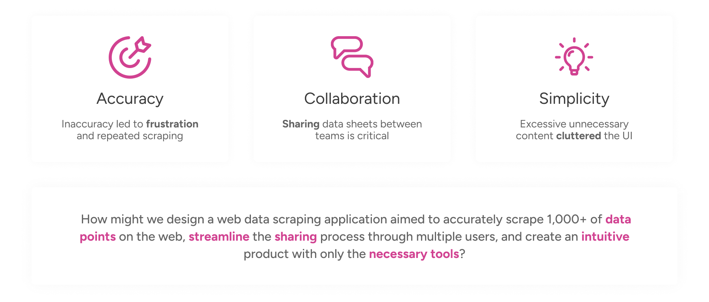
IDEATE
Brainstorming Solutions
Sketching the Initial Ideas
I began brainstorming potential solutions for all of the pages in the scraper: home, search, data preview, history, and favorites. Within each sketch I tackle various layouts, tools, features, and arrangements to create designs that were not only efficient but simplistic.
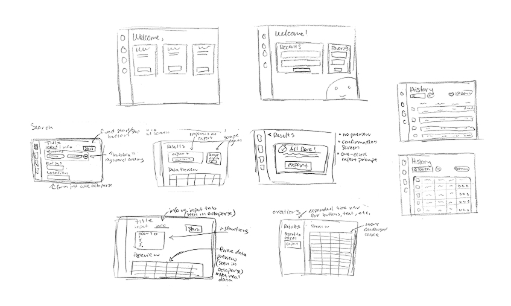
Digitalizing the Ideas
Honing into the home, history, and favorites page, I iterated multiple designs to find the optimal arrangement for the user’s needs. I used wire frames to map out the different screens for better overall cohesion and paid close attention to reusable components for a simple design.
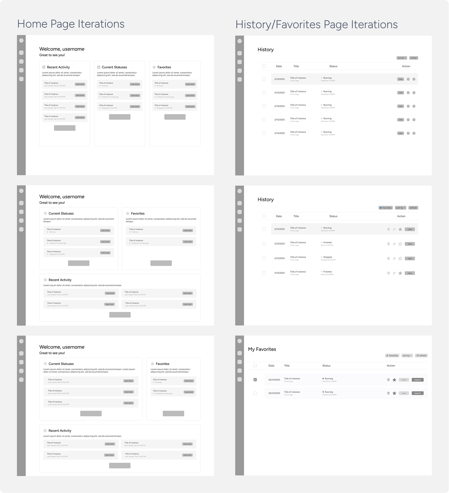
During this phase, I received valuable feedback from the client about how well my ideas met their needs. I learned that most members on the client’s team had smaller screen sizes, meaning my designs had to adapt to those restrictions.
And from our developers, the feasibility of certain features such as a word search or specific time stamps were not in the scope of our timeline, which meant brainstorming new alternatives.
PROTOTYPE
Bringing it all Together
Typography, Colors, and Components!
Moving further into higher fidelity, we solidified a clear design system that aligned with Chevron’s brand identity while maintaining a clean, minimalist design optimized for data display and viewing.
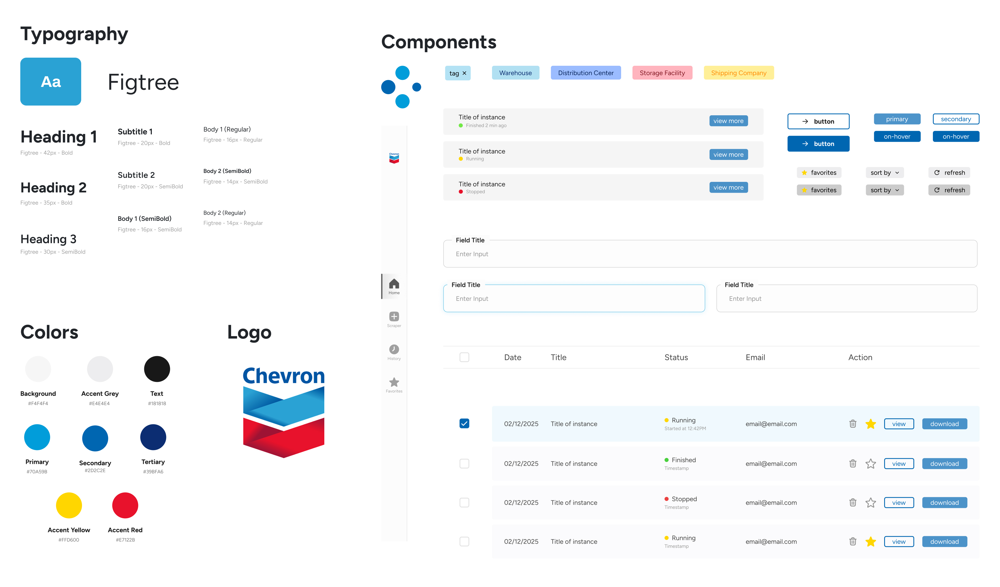
We adhered to industry design standards to give a more professional feel that was familiar to the original scraper the Chevron team was used to. This choice was necessary in order to create a product the team could jump right into and use, opposed to a more experimental or fresh design that could take longer to learn how to use.
FINAL PROTOTYPE
The Solutions
A Centralized Dashboard
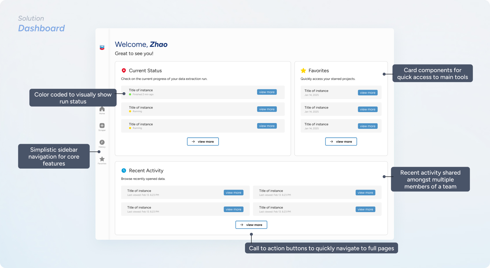
Search the Web to Scrape
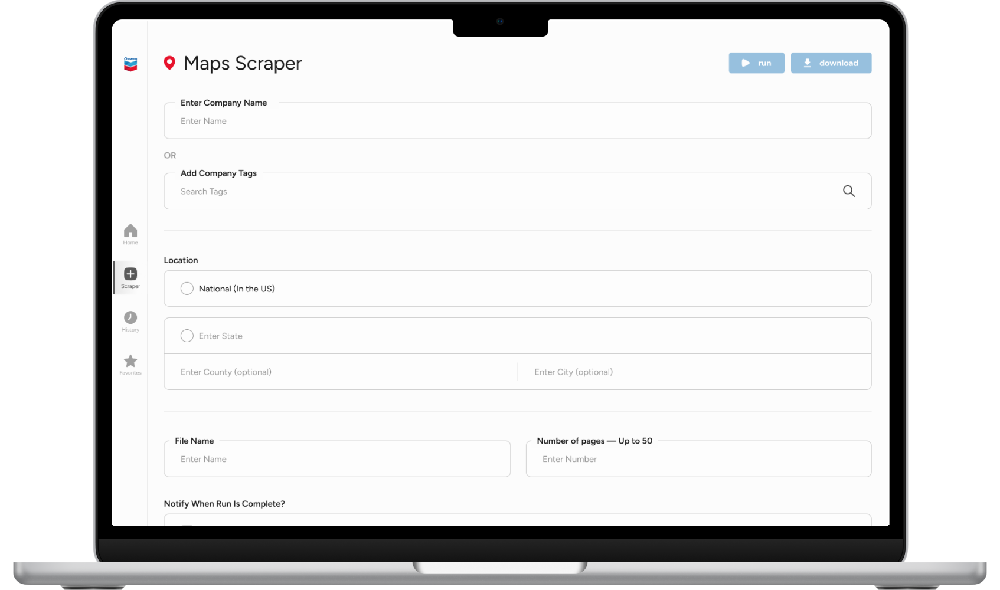
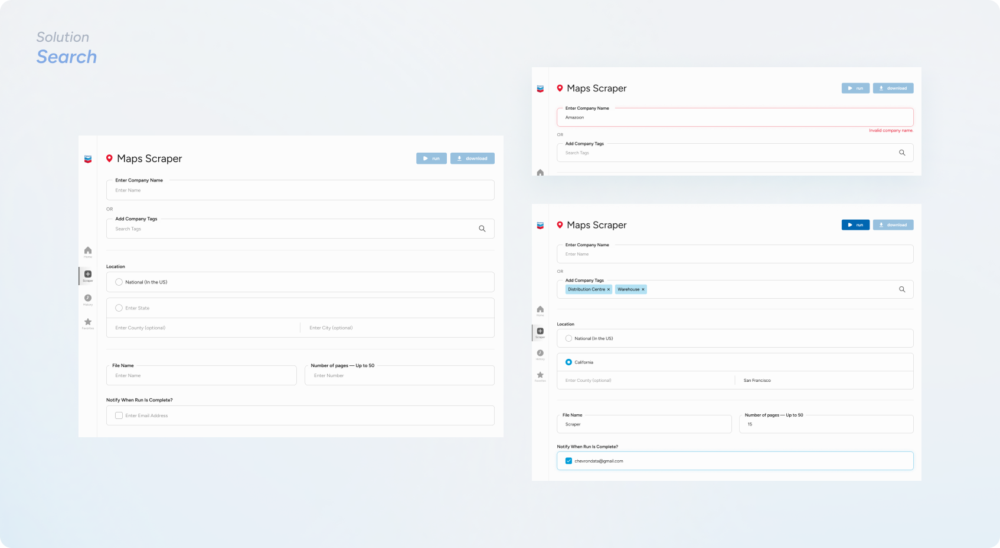
See Your Run Status
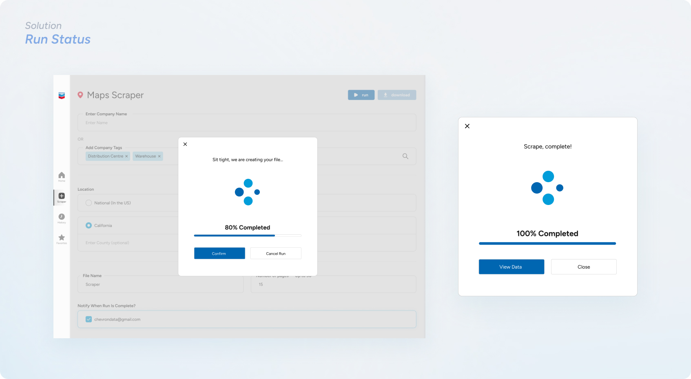
Preview Your Data to Export
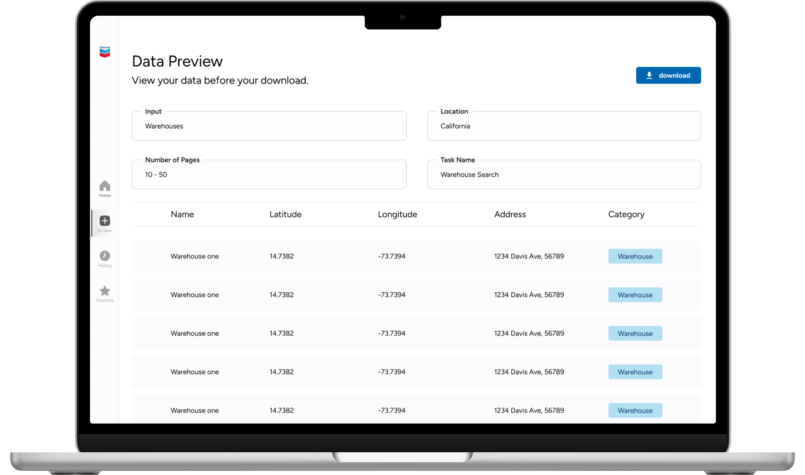
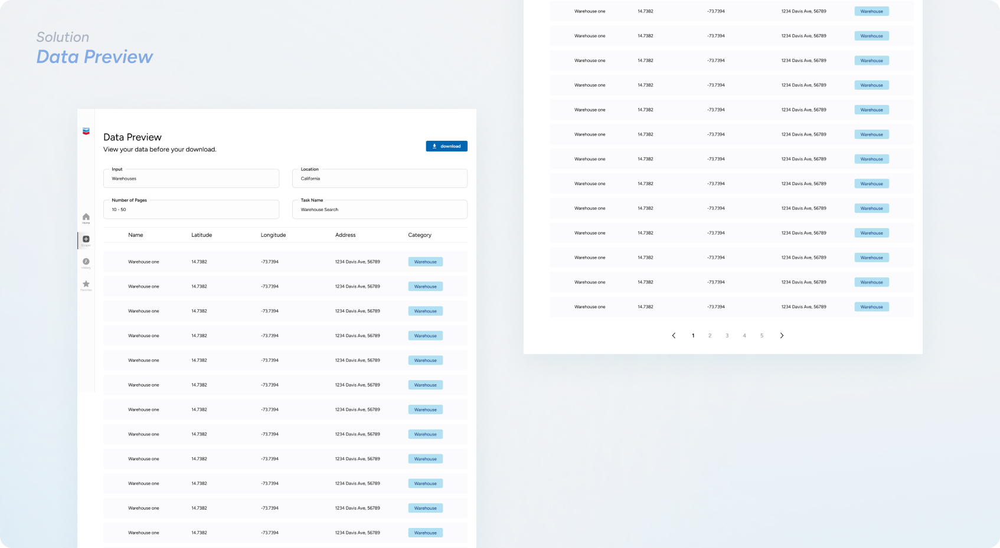
Access Your Past and Favorite Scrapes
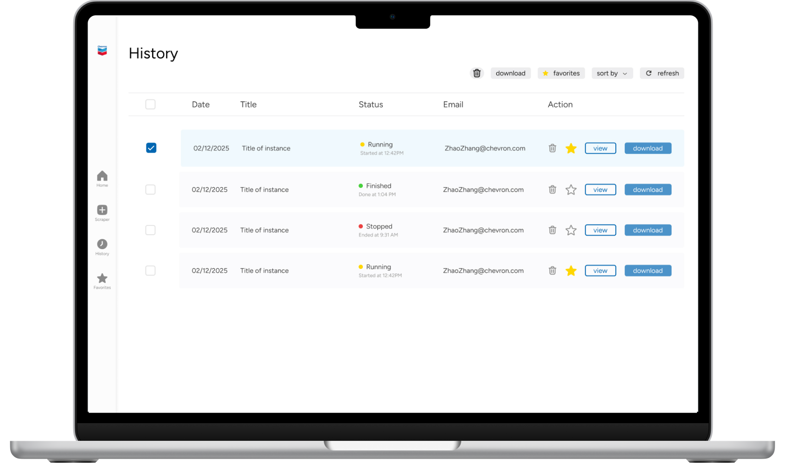
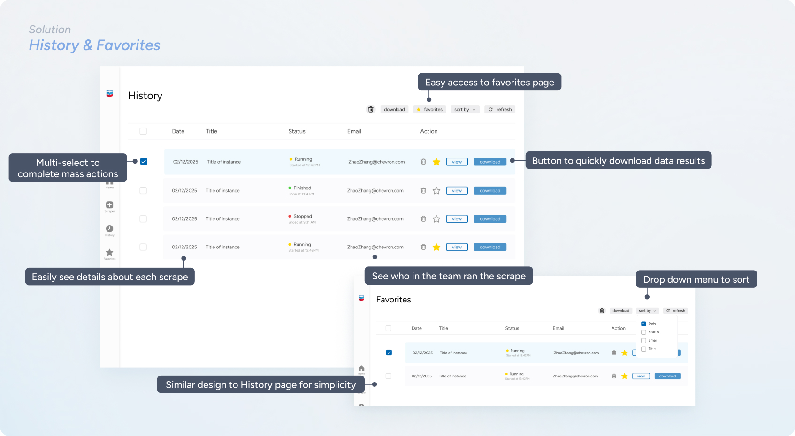
TAKEAWAYS
What I Gained as a Designer
01 Empathize with the audience.
This product was initiated due to poor experience with another web scraper, making it crucial that our product address the pain points our users felt. Doing so required many meetings, lots of questions and research, and a ton of iterating to fully empathize with our client and meet their needs.
02 Feasibility is important.
Discussing with our devs revealed holes within our design ideas due to feasibility issues. So although our minds were running wild, we had to find a middle ground - we need to respect the time of our developers but also understand the abilities and circumstances of the client. This helped me pin point exactly what was to be implemented, and what ideas to archive.
03 Know what you’re building.
Before joining this team I had never used a web scraper at all. To fully understand what our client was asking for and to build a successful product, I needed to do additional research. Browsing on the internet, talking to our developers, and conducting competitive analysis were all ways I better prepared myself for this design challenge.